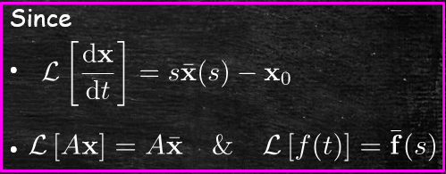

Jonathan Crofts
Nottingham Trent University
First let us remind ourselves how to solve a single inhomogeneous ODE of the form:
\[ \frac{\mathrm{d}x}{\mathrm{d}t} = ax+f(t):\quad x(0)=x_0 \]Rearranging we get
\[ \frac{\mathrm{d}x}{\mathrm{d}t} -ax = f(t) \]Which upon multiplying by the integrating factor $\displaystyle e^{-at}$ becomes
\[ \begin{align*} e^{-at}\frac{\mathrm{d}x}{\mathrm{d}t}-ae^{-at}x= e^{-at}f(t)\quad &\implies \quad\frac{\mathrm{d}}{\mathrm{d}t}\left\{ e^{-at}x(t)\right\} = e^{-at}f(t)\\ &\implies\quad e^{-at}x(t)=x_0+\int_0^t e^{-a\tau}f(\tau)\mathrm{d}\tau \end{align*} \]Finally we solve for $x$ to obtain
\[ \color{red}{\boxed{\color{white}{ x(t)=x_0e^{at}+\int_0^t e^{a(t-\tau)}f(\tau)\mathrm{d}\tau }}} \]Using the above formula, show that the equation
\[ \frac{\mathrm{d}x}{\mathrm{d}t} = 3x+e^{-2t}:\quad x(0)=2 \]has solution
\[ x(t) = \frac{11}{5}e^{3t}-\frac{1}{5}e^{-2t} \]Let us now consider a system of the form
\[ \frac{\mathrm{d}\mathbf{x}}{\mathrm{d}t} = A\mathbf{x}+\mathbf{f}(t): \quad \mathbf{x}(0)=\mathbf{x}_0 \]Applying Laplace transforms we obtain
\[ s\bar{\mathbf{x}}(s)-\mathbf{x}_0 = A\bar{\mathbf{x}}(s) +\bar{\mathbf{f}}(s) \]Which rearranges to give
\[ \begin{align*} \bar{\mathbf{x}}(s)&= (sI_n-A)^{-1}\left[\mathbf{x}_0+\bar{\mathbf{f}}(s)\right]\\ &=(sI_n-A)^{-1}\mathbf{x}_0+(sI_n-A)^{-1}\bar{\mathbf{f}}(s) \end{align*} \] From Lecture 7 we know that
\[ \mathcal{L}^{-1}\left[(sI_n-A)^{-1}\mathbf{x}_0\right] = \mathcal{L}^{-1}\left[(sI_n-A)^{-1}\right]\mathbf{x}_0 = e^{At}\mathbf{x}_0 \]In order to compute
\[ \mathcal{L}^{-1}\left[(sI_n-A)^{-1}\bar{\mathbf{f}}(s)\right] \]We need to use the so-called convolution theorem which states that
\[ \color{red}{\boxed{\color{white}{ \mathcal{L}\left[\int_0^t\mathbf{f}(\tau)\mathbf{g}(t-\tau)\mathrm{d}\tau\right] = \bar{\mathbf{f}}(s)\bar{\mathbf{g}}(s) }}} \]Here
Setting
\[ \bar{\mathbf{g}}(s)=(sI_n-A)^{-1} \]And using the fact that
\[ \mathcal{L}^{-1}\left[(sI_n-A)^{-1}\right] = e^{At} \]We can use the convolution theorem to obtain
\[ \begin{align*} \mathcal{L}^{-1}\left[\bar{\mathbf{g}}(s)\bar{\mathbf{f}}(s)\right]&=\mathcal{L}^{-1}\left[(sI_n-A)^{-1}\bar{\mathbf{f}}(s)\right]\\ &= \int_0^te^{A(t-\tau)}\mathbf{f}(\tau)\mathrm{d}\tau \end{align*} \]Here $\displaystyle g(t)=e^{At}$
We can use the above to solve our system of ODEs...
Applying inverse Laplace transforms to
\[ \bar{\mathbf{x}}(s) = (sI_n-A)^{-1}\mathbf{x}_0+(sI_n-A)^{-1}\bar{\mathbf{f}}(s) \]We obtain
\[ \begin{align*} \mathbf{x}(t)&=\mathcal{L}^{-1}\left[(sI_n-A)^{-1}\mathbf{x}_0\right]+\mathcal{L}^{-1}\left[(sI_n-A)^{-1}\bar{\mathbf{f}}(s)\right]\\ &=\mathcal{L}^{-1}\left[(sI_n-A)^{-1}\right]\mathbf{x}_0+\mathcal{L}^{-1}\left[(sI_n-A)^{-1}\bar{\mathbf{f}}(s)\right]\\ &= \color{red}{\boxed{\color{white}{e^{At}\mathbf{x}_0 + \int_0^te^{A(t-\tau)}\mathbf{f}(\tau)\mathrm{d}\tau}}} \end{align*} \]The above solution can also be written as
\[ e^{At}\mathbf{x}_0 + \int_0^te^{A\tau}\mathbf{f}(t-\tau)\mathrm{d}\tau \]The matrix
\[ A=\begin{bmatrix}-2&1&0\\0&-1&1\\1&-1&0\end{bmatrix}=HJH^{-1} \]Where
\[ J=\begin{bmatrix}-1&1&0\\0&-1&1\\0&0&-1\end{bmatrix}\quad H=\begin{bmatrix}1&0&1\\1&1&1\\0&1&1\end{bmatrix}\quad H^{-1}=\begin{bmatrix}0&1&-1\\-1&1&0\\1&-1&1\end{bmatrix} \]Compute the matrix exponential and use it to determine the solution of
\[ \frac{\mathrm{d}\mathbf{x}}{\mathrm{d}t} = A\mathbf{x}+\mathbf{b}e^{-t}:\quad \mathbf{x}(0)=\begin{bmatrix}1&0&0\end{bmatrix}^T \]Where
\[ \mathbf{b} = \begin{bmatrix}0&0&1\end{bmatrix}^T \]Recall
\[ e^{At}=He^{Jt}H^{-1} \quad\text{and}\quad e^{Jt}=\begin{bmatrix}1&t&\frac{t^2}{2}\\0&1&t\\0&0&1\end{bmatrix}e^{-t} \]So that
\[ \begin{align*} e^{At}&=H \begin{bmatrix}1&t&\frac{t^2}{2}\\0&1&t\\0&0&1\end{bmatrix}\begin{bmatrix}0&1&-1\\-1&1&0\\1&-1&1\end{bmatrix}e^{-t}\\ &=\begin{bmatrix}1&0&1\\1&1&1\\0&1&1\end{bmatrix}\begin{bmatrix}\frac{t^2}{2}-t&1+t-\frac{t^2}{2}&\frac{t^2}{2}-1\\ t-1&1-t&t\\1&-1&12\end{bmatrix}e^{-t}\\ &=\color{red}{\boxed{\color{white}{\begin{bmatrix}\frac{t^2}{2}-t+1&t-\frac{t^2}{2}&\frac{t^2}{2}\\\frac{t^2}{2}&1-\frac{t^2}{2}&\frac{t^2}{2}+t\\t&-t&1+t\end{bmatrix}e^{-t}}}} \end{align*} \]Thus
\[ e^{At}\mathbf{x}_0 = e^{-t}\begin{bmatrix}\frac{t^2}{2}-t+1&t-\frac{t^2}{2}&\frac{t^2}{2}\\\frac{t^2}{2}&1-\frac{t^2}{2}&\frac{t^2}{2}+t\\t&-t&1+t\end{bmatrix} \begin{bmatrix}1\\0\\0\end{bmatrix} =\color{red}{\boxed{\color{white}{ \begin{bmatrix}\frac{t^2}{2}-t+1\\\frac{t^2}{2}\\t\end{bmatrix}e^{-t}}}} \]And
\[ e^{A\tau}\mathbf{f}(t-\tau) = e^{-\tau}\begin{bmatrix}\frac{\tau^2}{2}-\tau+1&\tau-\frac{\tau^2}{2}&\frac{\tau^2}{2}\\\frac{\tau^2}{2}&1-\frac{\tau^2}{2}&\frac{\tau^2}{2}+\tau\\\tau&-\tau&1+\tau\end{bmatrix} \begin{bmatrix}0\\0\\e^{-(t-\tau)}\end{bmatrix} = \color{#00FF00}{\boxed{\color{white}{\begin{bmatrix}\frac{\tau^2}{2}\\\frac{\tau^2}{2}+\tau\\1+\tau\end{bmatrix}e^{-t}}}} \]It follows that
\[ \begin{align*} \mathbf{x}(t) &=e^{At}\mathbf{x}_0+\int_0^te^{A\tau}\mathbf{f}(t-\tau)\mathrm{d}\tau\\&= \begin{bmatrix}\frac{t^2}{2}-t+1\\\frac{t^2}{2}\\t\end{bmatrix}e^{-t} + \int_0^t\begin{bmatrix}\frac{\tau^2}{2}\\\frac{\tau^2}{2}+\tau\\1+\tau\end{bmatrix}e^{-t} \mathrm{d}\tau \end{align*} \]Thus we need to compute the integral
\[ \int_0^t\begin{bmatrix}\frac{\tau^2}{2}\\\frac{\tau^2}{2}+\tau\\1+\tau\end{bmatrix}e^{-t} \mathrm{d}\tau \]For vector (or matrix) functions we perform integration component-wise
Noting that $\displaystyle e^{-t}$ does not depend on the integration variable $\tau$ we can write
\[ \int_0^t\begin{bmatrix}\frac{\tau^2}{2}\\\frac{\tau^2}{2}+\tau\\1+\tau\end{bmatrix}e^{-t} \mathrm{d}\tau = e^{-t}\left.\begin{bmatrix}\frac{\tau^3}{6}\\\frac{\tau^3}{6}+\frac{\tau^2}{2}\\\tau+\frac{\tau^2}{2}\end{bmatrix}\right|_0^t=\color{#00FF00}{\boxed{\color{white}{ e^{-t}\begin{bmatrix}\frac{t^3}{6}\\\frac{t^3}{6}+\frac{t^2}{2}\\t+\frac{t^2}{2}\end{bmatrix}}}} \]And so
\[ \mathbf{x}(t) = \begin{bmatrix}\frac{t^2}{2}-t+1\\\frac{t^2}{2}\\t\end{bmatrix}e^{-t}+\begin{bmatrix}\frac{t^3}{6}\\\frac{t^3}{6}+\frac{t^2}{2}\\t+\frac{t^2}{2}\end{bmatrix}e^{-t} = \color{red}{\boxed{\color{white}{ \begin{bmatrix}\frac{t^3}{6}+\frac{t^2}{2}-t+1\\\frac{t^3}{6}+t^2\\2t+\frac{t^2}{2}\end{bmatrix}e^{-t}}}} \]